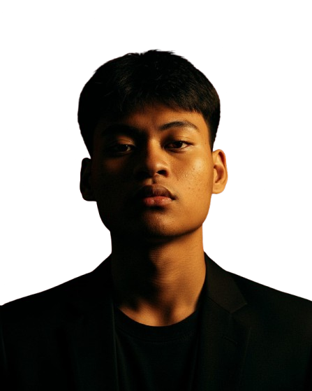
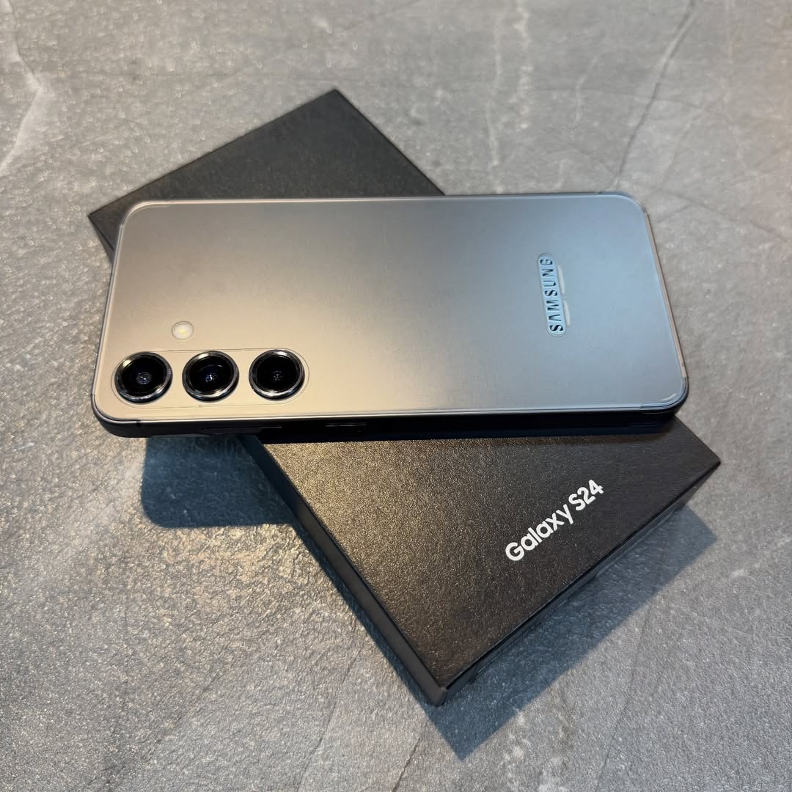
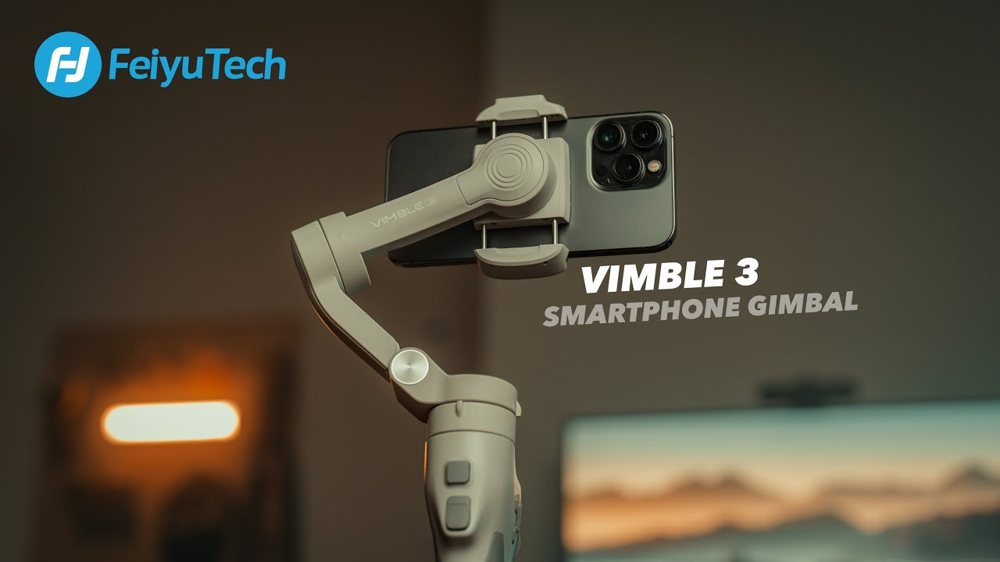

Video Editor & Content Specialist
Teknik Informatika · UNIKOM 2025
Halo, saya
Video Editor Front-end Dev AI Enthusiast
Mahasiswa Teknik Informatika UNIKOM yang berfokus pada produksi konten digital berkualitas tinggi — dari sinematik pendek hingga konten tren.
Saya adalah mahasiswa Semester 2 Teknik Informatika UNIKOM (Angkatan 2025) yang berfokus pada produksi konten digital, video editing, dan pengembangan web. Menguasai pengambilan gambar dan audio berkualitas tinggi, dengan ketelitian dalam proses editing untuk menghasilkan visual yang bersih dan menarik.
Dengan pengalaman sebagai Video Editor sejak 2025, saya memproduksi video Cinematic berkualitas tinggi sekaligus mengembangkan skill di bidang Front End Web. Saya juga merupakan penyuka AI Prompting — gemar bereksperimen dengan berbagai prompt untuk menghasilkan output terbaik dari AI, dan website portofolio ini pun dibuat dengan bantuan AI.
CapCut & Alight Motion
Sinematik Pendek & Konten Tren
Storyboarding & Riset
Algoritma Sosmed
HTML | CSS | JS
Alat yang saya gunakan untuk produksi & editing video

gear-samsung.jpg
Smartphone flagship untuk pengambilan gambar & video 4K/60fps dengan kualitas sinematik.

gear-gimbal.jpg
Gimbal 3-axis untuk footage yang smooth & stabil dalam berbagai kondisi pengambilan gambar.
gear-laptop.jpg
Laptop premium 2-in-1 untuk proses editing video & pengembangan konten secara mobile.
Geser untuk melihat lebih banyak →
Mari Berkolaborasi
Ada project, kolaborasi, atau sekadar mau ngobrol soal video & konten? Jangan ragu — saya siap diajak kerja sama.
Biasanya balas dalam 24 jam